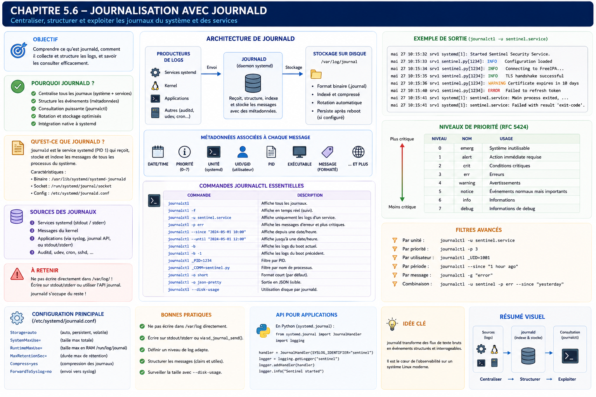

Chapitre 5.6 — Journalisation avec journald
Campagne 5 — systemd et services
« Une panne sans journal est une hypothèse. Une panne avec des journaux est un problème que l'on peut résoudre. »
Vous êtes ici
Partie I — Construire un socle sécurisé
Campagne 5 — systemd et les services
5.1 Comprendre systemd
5.2 Les unités (.service, .socket, .target…)
5.3 Créer le service Sentinel
5.4 Sandboxing systemd
5.5 Capacités Linux
► 5.6 Journalisation avec journald
5.7 Supervision et redémarrage automatique
5.8 Mission : rendre Sentinel résilient
Objectifs pédagogiques
À la fin de ce chapitre, vous serez capable de :
- comprendre le fonctionnement interne de systemd-journald ;
- distinguer
journaldde Syslog ; - concevoir une stratégie de journalisation adaptée à un service moderne ;
- exploiter efficacement
journalctllors d'un incident ; - intégrer naturellement Sentinel dans l'écosystème de journalisation d'AlmaLinux.
Pourquoi ce chapitre existe
Imaginons qu'un administrateur vous appelle à 3 h du matin.
« Sentinel ne répond plus. »
La première question que vous allez poser ne sera probablement pas :
Quel est le PID ?
Ni :
Quelle version de Python est installée ?
Vous demanderez presque toujours :
Que disent les journaux ?
Les journaux sont la mémoire du système. Sans eux, tout diagnostic devient une succession d'hypothèses. Avec eux, l'ingénieur dispose d'une chronologie précise des événements. Dans une infrastructure moderne, la journalisation n'est plus une fonctionnalité secondaire. Elle fait partie intégrante de la sécurité.
Théorie détaillée
Avant systemd
Historiquement, la plupart des distributions Linux utilisaient : syslog ou rsyslog Les applications écrivaient dans :
/var/log/messages
/var/log/secure
/var/log/maillog
...
Chaque service possédait parfois son propre fichier. Exemple.
Puis :
Puis :
Cette approche fonctionnait. Elle présentait néanmoins plusieurs limites.
Les limites des fichiers de logs
Prenons un incident. À 14 h 32, Sentinel cesse brutalement de fonctionner. Pour comprendre pourquoi, l'administrateur doit parfois consulter : /var/log/messages Puis : /var/log/secure Puis : /var/log/firewalld Puis : /var/log/audit/audit.log Puis : Les journaux de Sentinel. L'information est dispersée. Les corrélations deviennent difficiles.
L'arrivée de journald
systemd introduit un nouveau composant. systemd-journald Son rôle est simple. Centraliser tous les événements du système. Schématiquement.
Tous les événements convergent vers une base commune.
Une différence fondamentale
Contrairement aux anciens systèmes, journald ne raisonne plus principalement en termes de fichiers. Il raisonne en termes d'événements structurés. Chaque événement possède des métadonnées. Par exemple :
- le service ;
- le PID ;
- l'utilisateur ;
- l'UID ;
- le cgroup ;
- le boot ;
- l'heure ;
- la priorité.
Cette richesse d'information facilite énormément les investigations.
Les journaux suivent le service
Prenons Sentinel. Le service produit : stdout ou stderr systemd capture automatiquement ces flux. Ils deviennent immédiatement consultables.
journalctl -u sentinel
Aucune configuration supplémentaire n'est nécessaire. C'est l'une des grandes forces de systemd. Le développeur écrit simplement :
print(...)
ou utilise le module :
logging
Le système se charge du reste.
Les flux standard
Une application possède généralement trois flux.
stdin
stdout
stderr
Pour un service systemd, les deux derniers sont automatiquement redirigés vers journald. Schématiquement.
Le développeur n'a donc pas besoin d'écrire lui-même dans un fichier. Cette responsabilité appartient désormais au système.
Où sont stockés les journaux ?
Deux modes existent.
Journal volatil
Avec Storage=volatile, les journaux sont stockés sous /run/log/journal et disparaissent au redémarrage. Avec la valeur par défaut Storage=auto, le comportement dépend notamment de l'existence de /var/log/journal : il faut donc vérifier la configuration effective de la distribution plutôt que supposer que tous les systèmes se comportent de la même façon.
Journal persistant
Pour exprimer explicitement le besoin de persistance, créer un fragment /etc/systemd/journald.conf.d/10-persistent.conf :
[Journal]
Storage=persistent
Puis recharger le service et transférer vers le stockage persistant les événements écrits tôt pendant le démarrage :
sudo systemctl restart systemd-journald
sudo journalctl --flush
Les fichiers persistants sont placés sous /var/log/journal. La persistance est généralement nécessaire sur un serveur, mais elle doit s'accompagner d'une politique de volume et de rétention.
Volume, rétention et limitation de débit
SystemMaxUse= et RuntimeMaxUse= limitent respectivement la place occupée par les journaux persistants et volatils. MaxRetentionSec= peut ajouter une durée maximale, tandis que journalctl --vacuum-size= et --vacuum-time= réalisent un nettoyage ponctuel des fichiers archivés. Les options RateLimitIntervalSec= et RateLimitBurst= empêchent enfin un service bavard de saturer le journal ; des messages peuvent alors être supprimés, ce qui doit être pris en compte pendant une investigation.
La commande suivante permet de mesurer avant d'agir :
journalctl --disk-usage
Une base d'événements
Visualisons le fonctionnement.
Chaque événement possède un ensemble d'attributs. C'est précisément ce qui rend les recherches extrêmement puissantes.
Le premier réflexe : journalctl
L'outil principal est :
journalctl
Sans argument, il affiche l'ensemble des événements connus. Très rapidement, on préférera cibler les recherches. Par exemple.
journalctl -u sentinel
Cette commande affiche uniquement les événements du service Sentinel. Elle deviendra rapidement l'une des commandes les plus utilisées de toute la formation.
Pourquoi cette approche est-elle supérieure ?
Supposons que Sentinel redémarre automatiquement. Avec un simple fichier texte, retrouver le bon PID peut devenir compliqué. Avec journald, chaque événement est déjà associé :
- au bon service ;
- au bon processus ;
- au bon démarrage.
Le système effectue lui-même cette corrélation. L'ingénieur peut alors se concentrer sur l'analyse, plutôt que sur la recherche des informations.
Explorer efficacement les journaux
Afficher l'ensemble du journal est rarement la bonne approche. Sur un serveur de production, plusieurs millions d'événements peuvent être enregistrés. Un ingénieur sécurité doit apprendre à interroger le journal plutôt qu'à le parcourir.
Consulter un service
La commande la plus utilisée est :
journalctl -u sentinel
Elle affiche uniquement les événements produits par : sentinel.service Le filtrage est réalisé directement par journald. Il ne s'agit pas d'une recherche textuelle. Le système connaît précisément le service à l'origine de chaque événement.
Afficher les derniers événements
Très souvent, seuls les derniers messages sont intéressants.
journalctl -u sentinel -n 50
Affiche les cinquante dernières entrées. Cette commande devient rapidement un réflexe lors des diagnostics.
Suivre les journaux en temps réel
Comme avec :
tail -f
sur un fichier classique, journald permet un suivi temps réel.
journalctl -fu sentinel
Les nouvelles entrées apparaissent immédiatement. Cette commande est extrêmement pratique pendant :
- un développement ;
- un test d'intégration ;
- une montée de version ;
- une investigation.
Rechercher sur une période
Les filtres temporels constituent l'une des grandes forces de journalctl. Exemple.
journalctl \
-u sentinel \
--since "2026-07-14 09:00:00"
Ou plus simplement.
journalctl \
-u sentinel \
--since "1 hour ago"
Autres exemples.
--since today
--since yesterday
--since "10 minutes ago"
Ces expressions naturelles rendent les recherches particulièrement rapides.
Définir une période complète
Nous pouvons également combiner :
--since
et
--until
Exemple.
journalctl \
-u sentinel \
--since "14:00" \
--until "14:30"
Cette fonctionnalité est très utile lors d'une enquête de sécurité. Supposons qu'un IDS détecte une activité suspecte à : 14 h 12 Il devient alors possible de reconstruire précisément ce qui s'est produit quelques minutes avant et quelques minutes après.
Les niveaux de priorité
Chaque événement possède une priorité. systemd reprend les niveaux historiques de Syslog.
0 Emergency
1 Alert
2 Critical
3 Error
4 Warning
5 Notice
6 Info
7 Debug
Ces niveaux sont importants. Ils permettent d'effectuer des recherches très ciblées.
Exemple
Afficher uniquement les erreurs.
journalctl \
-u sentinel \
-p err
Ou :
journalctl \
-p warning
Il devient inutile de parcourir plusieurs milliers de lignes d'informations.
Comprendre les niveaux
Tous les messages n'ont pas la même importance. Prenons Sentinel.
INFO
Service démarré. Simple information.
WARNING
Le certificat expire dans quinze jours. Le service fonctionne, mais une intervention sera bientôt nécessaire.
ERROR
Impossible de charger la configuration. Le fonctionnement est perturbé.
CRITICAL
La base des signatures est corrompue. Une intervention immédiate est probablement nécessaire.
DEBUG
Messages très détaillés, principalement utiles au développement. Ils sont généralement désactivés en production.
Filtrer par démarrage
Chaque redémarrage du serveur possède un identifiant unique. Il est donc possible d'afficher uniquement :
journalctl -b
c'est-à-dire :
Les événements du démarrage courant.
Ou encore.
journalctl -b -1
Le démarrage précédent. Puis :
journalctl -b -2
Deux redémarrages auparavant. Cette fonctionnalité est extrêmement utile lorsqu'un incident survient juste après un reboot.
Les métadonnées
Chaque entrée du journal contient beaucoup plus qu'un simple message. Affichons une entrée au format détaillé.
journalctl -u sentinel -o verbose
Nous découvrons notamment :
_SYSTEMD_UNIT
_PID
_UID
_GID
_BOOT_ID
_COMM
_EXE
_CMDLINE
_HOSTNAME
_MACHINE_ID
Toutes ces informations sont automatiquement enregistrées. Le développeur n'a rien à faire.
Pourquoi est-ce important ?
Prenons un exemple. Deux services produisent exactement le même message. Connection refused Avec un simple fichier texte, la recherche devient compliquée. Avec journald, chaque entrée possède déjà :
- le service ;
- le PID ;
- le processus ;
- l'exécutable.
L'ambiguïté disparaît.
Exporter les journaux
Journalctl permet également plusieurs formats de sortie. Format classique.
journalctl
Format court.
journalctl -o short
Format JSON.
journalctl -o json
Format JSON "pretty".
journalctl -o json-pretty
Ce dernier est particulièrement intéressant pour :
- les scripts Python ;
- les outils SIEM ;
- les traitements automatisés.
Nous retrouverons ce format dans la partie du manuel consacrée à la supervision.
Préférer les champs structurés aux expressions régulières
Les expressions régulières restent utiles pour explorer le contenu libre de MESSAGE, mais elles ne doivent pas remplacer les champs structurés disponibles. Beaucoup de scripts font encore ceci.
grep ERROR /var/log/messages
Cette approche est fragile. Pourquoi ? Parce qu'elle dépend du texte affiché. Avec journald, nous pouvons interroger directement les métadonnées. Par exemple :
- uniquement Sentinel ;
- uniquement les erreurs ;
- uniquement depuis une heure ;
- uniquement sur le boot précédent.
L'information devient structurée. Les scripts deviennent beaucoup plus robustes.
Sentinel et le module logging de Python
L'une des erreurs les plus fréquentes consiste à écrire directement dans un fichier. Par exemple.
logging.FileHandler(
"/var/log/sentinel.log"
)
Cette approche était courante autrefois. Aujourd'hui, elle présente plusieurs inconvénients.
- rotation des journaux à gérer ;
- permissions ;
- concurrence ;
- chemins différents selon les distributions.
Une application exécutée par systemd peut adopter une approche beaucoup plus simple.
import logging
logging.basicConfig(
level=logging.INFO
)
logger = logging.getLogger("sentinel")
Puis :
logger.info("Sentinel started")
Ou même :
print("Sentinel started")
Les flux étant capturés automatiquement, ils apparaissent immédiatement dans :
journalctl -u sentinel
L'application reste totalement indépendante du système de journalisation. C'est une excellente séparation des responsabilités.
Structurer les messages
Un bon journal ne consiste pas uniquement à écrire des phrases. Les messages doivent être exploitables. Évitez : Erreur. Préférez :
Impossible d'ouvrir le certificat serveur
(/etc/sentinel/tls/server.pem).
Évitez : Connexion refusée. Préférez :
Connexion TLS refusée :
certificat client expiré
(CN=agent-42).
Un bon message répond immédiatement aux questions suivantes :
- Que s'est-il passé ?
- Où ?
- Pourquoi ?
- Sur quel composant ?
- Avec quelles conséquences ?
Cette discipline réduit considérablement le temps d'investigation.
Approfondissement
Les journaux sont une preuve, pas un simple historique
L'erreur la plus fréquente consiste à considérer les journaux comme une simple aide au débogage. En réalité, dans une infrastructure professionnelle, les journaux remplissent trois fonctions distinctes.
Cette troisième fonction est souvent sous-estimée. Lorsqu'une compromission est découverte plusieurs semaines après les faits, les journaux deviennent la seule mémoire fiable du système. Chaque message doit donc être considéré comme un élément d'investigation potentiel.
La journalisation est un contrat
Prenons deux développeurs. Le premier écrit :
logger.error("Erreur")
Le second écrit :
logger.error(
"Échec de l'authentification TLS "
"(CN=%s, IP=%s)",
client_cn,
client_ip
)
Les deux applications fonctionnent. Pourtant, la seconde permettra quelques mois plus tard de répondre immédiatement à des questions comme :
- Quel client était concerné ?
- Depuis quelle adresse IP ?
- À quel moment ?
- Combien de fois ?
Un journal bien conçu réduit considérablement le coût d'une investigation.
Les journaux doivent être exploitables par une machine
Une autre erreur classique consiste à produire uniquement des messages destinés à un humain. Par exemple. Une erreur étrange est apparue... Ce message est peut-être compréhensible par le développeur. Il est très difficilement exploitable par :
- Grafana ;
- Loki ;
- Splunk ;
- Elastic ;
- un SIEM ;
- un moteur d'alertes.
Un bon journal doit rester :
- lisible par un humain ;
- interprétable par une machine.
C'est l'une des raisons pour lesquelles les journaux structurés gagnent progressivement du terrain.
L'application ne choisit pas la destination
Une application moderne ne devrait généralement pas décider où seront stockés ses journaux. Elle produit simplement des événements. Le système d'exploitation décide ensuite :
Cette séparation rend l'application beaucoup plus portable. Sentinel fonctionnera exactement de la même manière :
- sur une VM AlmaLinux ;
- dans un conteneur Podman ;
- sur une infrastructure cloud.
Concevoir la politique
Un architecte ne commence jamais par se demander :
Quels messages allons-nous écrire ?
Il commence par répondre à une autre question.
Quelles informations seront nécessaires lors d'un incident ?
Cette différence de perspective change complètement la qualité de la journalisation.
Chaque événement possède une valeur
Prenons un serveur Sentinel. Plusieurs événements sont possibles.
Tous ces événements répondent à des besoins différents. Un architecte veille à ce qu'aucune catégorie ne soit oubliée.
Penser "investigation"
Imaginons qu'un analyste SOC intervienne six mois après un incident. Quelles questions posera-t-il ? Probablement :
- Quel utilisateur était concerné ?
- Quelle machine ?
- Quel certificat ?
- Quelle adresse IP ?
- Quel module Sentinel ?
- Quelle version de l'application ?
Si ces informations ne figurent pas dans les journaux, elles seront probablement perdues. Une bonne stratégie de journalisation est donc pensée dès la conception.
Point de vue offensif
L'attaquant déteste les journaux. Pourquoi ? Parce qu'ils racontent son histoire. Une attaque laisse généralement de nombreuses traces. Par exemple :
Même si chaque événement paraît anodin, leur chronologie révèle souvent la totalité du scénario.
Les premières actions d'un attaquant
Après une compromission, l'attaquant cherche fréquemment à :
- supprimer des journaux ;
- modifier des journaux ;
- empêcher leur production.
C'est précisément pour cette raison que les journaux doivent être :
- centralisés ;
- protégés ;
- archivés ;
- surveillés.
Nous reviendrons sur ces aspects dans la campagne consacrée à la supervision.
En entreprise
Dans les grandes infrastructures, les journaux ne sont pratiquement jamais consultés directement sur les serveurs. Le flux ressemble davantage à ceci.
Ou :
Le serveur devient uniquement un point de collecte. L'analyse est réalisée ailleurs. Cette architecture présente plusieurs avantages.
- conservation longue durée ;
- corrélation entre plusieurs serveurs ;
- alertes automatiques ;
- recherche plein texte ;
- tableaux de bord.
Nous construirons progressivement cette architecture dans les dernières campagnes du manuel.
Culture technique
Contrairement à une idée répandue, journald n'a jamais eu pour objectif de remplacer complètement Syslog. Les deux peuvent parfaitement cohabiter. Une architecture classique AlmaLinux ressemble souvent à ceci.
journald assure :
- la collecte locale ;
- les métadonnées ;
- l'intégration avec systemd.
rsyslog assure :
- le transport ;
- le filtrage ;
- le stockage distant.
Cette complémentarité explique pourquoi les deux composants sont encore largement utilisés ensemble.
Piège classique
Journaliser beaucoup n'est pas journaliser correctement
Certains développeurs pensent qu'un bon journal est un journal très volumineux. Ils écrivent alors :
Connexion reçue
Connexion reçue
Connexion reçue
Connexion reçue
...
Plusieurs millions de lignes plus tard, personne ne trouve l'information utile. Une bonne journalisation n'est pas une question de quantité. C'est une question de pertinence. Chaque message doit répondre à un besoin clairement identifié.
Écrire les journaux en double
Autre erreur fréquente. L'application écrit : stdout et simultanément : /var/log/sentinel.log On obtient alors :
- deux jeux de journaux ;
- deux rotations ;
- deux stratégies de conservation.
Cette duplication complique inutilement l'exploitation. Lorsqu'une application est exécutée par systemd, il est généralement préférable de laisser journald assurer cette responsabilité.
TP 1 — Produire et filtrer les événements Sentinel
Objectif
Maîtriser journalctl et concevoir une stratégie de journalisation professionnelle pour Sentinel.
Étape 1 — Produire des événements
Démarrer Sentinel. Générer volontairement :
- un démarrage ;
- une erreur de configuration ;
- une connexion TLS refusée ;
- un arrêt propre.
Observer les journaux.
journalctl -u sentinel
Étape 2 — Utiliser les filtres
Afficher : Les cinquante derniers événements.
journalctl -u sentinel -n 50
Les erreurs uniquement.
journalctl -u sentinel -p err
Les événements de la dernière heure.
journalctl -u sentinel --since "1 hour ago"
TP 2 — Structurer et exploiter les journaux
Étape 3 — Suivi temps réel
Ouvrir deux terminaux. Dans le premier :
journalctl -fu sentinel
Dans le second, générer différentes actions dans Sentinel. Observer la chronologie des événements.
Étape 4 — Tester le module logging
Modifier Sentinel afin d'utiliser le module Python logging. Vérifier que les messages apparaissent automatiquement dans :
journalctl -u sentinel
sans écrire dans un fichier dédié.
Étape 5 — Concevoir une politique de journalisation
Définir pour Sentinel :
- quels événements relèvent du niveau
INFO; - lesquels doivent être
WARNING; - lesquels doivent être
ERROR; - lesquels justifient un niveau
CRITICAL.
Comparer cette politique avec les besoins d'un centre opérationnel de sécurité (SOC).
Mission d'ingénieur
Votre entreprise possède plusieurs centaines de serveurs. Chaque application produit ses propres journaux. Formats différents. Emplacements différents. Niveaux différents. L'équipe SOC ne parvient plus à corréler les incidents. Votre mission consiste à définir une politique commune de journalisation. Cette politique devra notamment préciser :
- les niveaux de sévérité autorisés ;
- les informations obligatoires dans chaque événement ;
- la durée de conservation ;
- la centralisation ;
- les règles de confidentialité ;
- les événements déclenchant automatiquement une alerte.
Votre proposition devra être directement applicable à Sentinel.
Impact sur Sentinel
Sentinel produit désormais des journaux exploitables par :
- les administrateurs ;
- les développeurs ;
- les équipes sécurité ;
- les outils de supervision.
Cette étape est essentielle. Les prochains chapitres utiliseront directement ces journaux pour :
- détecter les défaillances ;
- déclencher des redémarrages ;
- superviser le service ;
- construire les tableaux de bord de sécurité.
Synthèse
journaldcentralise les événements produits par les services systemd.journalctlpermet des recherches structurées par service, période, priorité ou démarrage.- Les applications modernes doivent produire des événements, pas gérer elles-mêmes leur stockage.
- Les journaux constituent une preuve d'exploitation autant qu'un outil de diagnostic.
- Une bonne politique de journalisation est pensée dès la conception de l'application.
- Les journaux doivent être utiles aussi bien à un humain qu'à une machine.
Schéma récapitulatif

Pour aller plus loin
Les journaux permettent de comprendre un incident ; ils ne remettent pas le service en état. Le chapitre suivant construit une politique de reprise mesurée, du crash détecté par systemd au blocage signalé par le watchdog.
← 5.5 — Les capacités Linux · 5.7 — Supervision et redémarrage automatique →